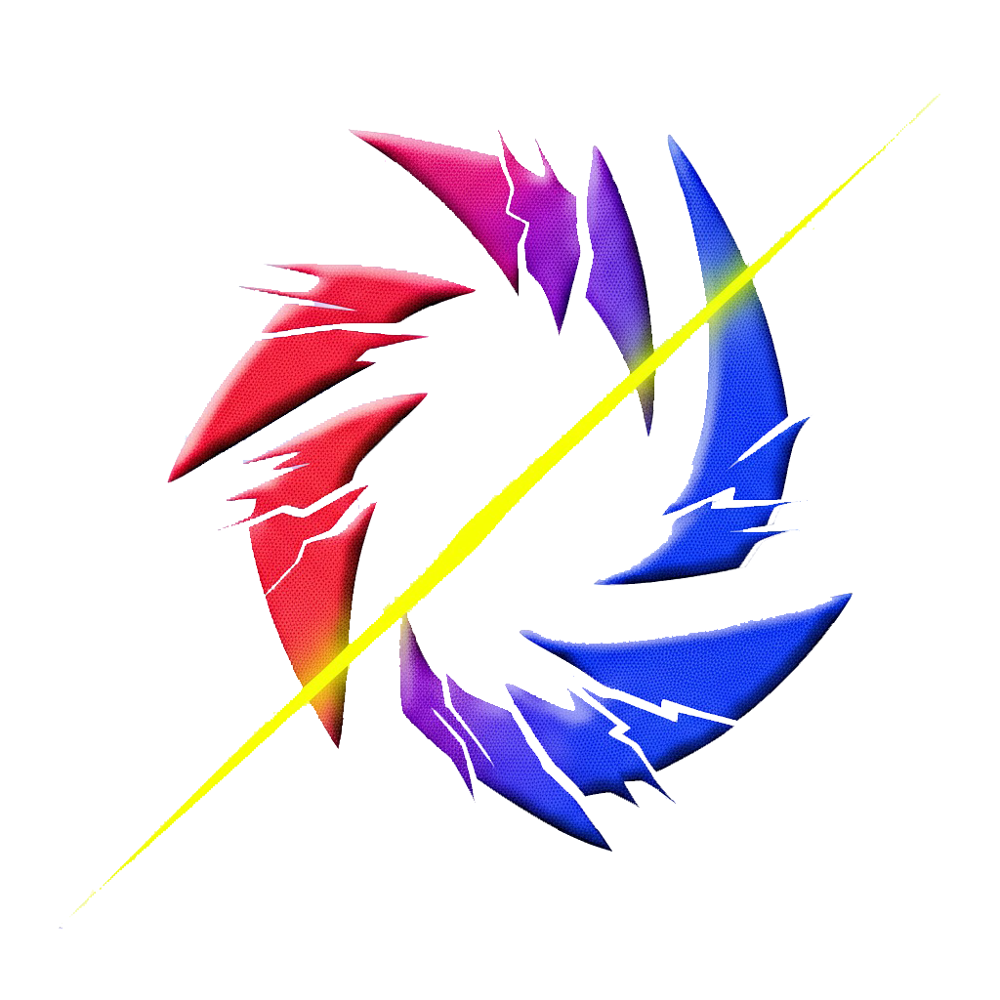
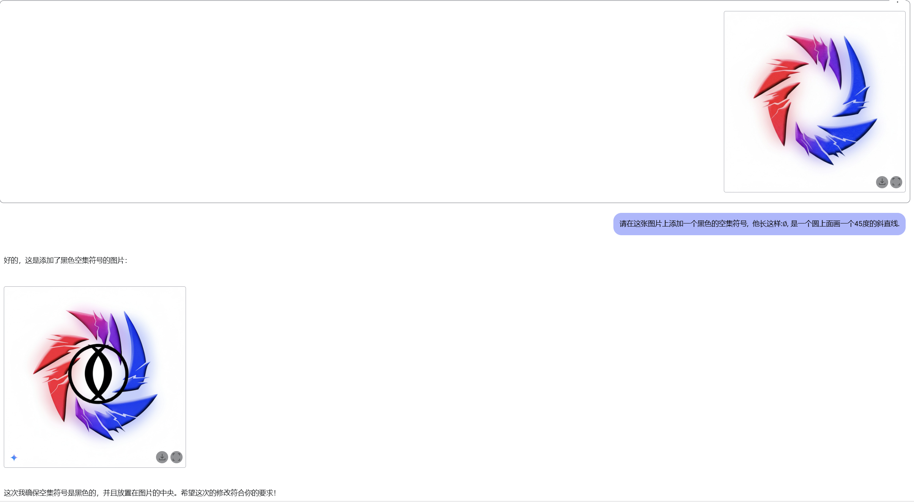

更新了icon, 还算挺惊天动地的.
以世界上最好的浏览器: QQ浏览器的不知道哪个版本为例, 呈现结果如下:
高清大图:

你可能会对这个锯齿哈气, 但我懒得改了.
不赖.
顺便提一嘴这个是怎么做的
我: 我想设计一个惊天动地的icon，请你模仿一个串子给我一些建议.
ds: 要设计一个“惊天动地”的视觉冲击型图标，需要结合 动态张力、极简符号化 和 多维度隐喻 。以下是具体方案：
核心概念：量子纠缠式视觉悖论
用 莫比乌斯环+闪电裂痕 构成无限循环的动态矛盾体，环体采用 红蓝双色消隐渐变 ，在静态中制造光学颤动效果。
结构拆解
-
主体框架
- 莫比乌斯环内嵌闪电状负空间，环体厚度从2px到20px非线性渐变
- 红（#FF2D55）到蓝（#007AFF）的量子跃迁式色彩过渡，在30%区域插入高饱和品红（#FF00FF）作为视觉地雷
-
暗物质粒子流
- 环外侧散布 斐波那契螺旋排布的12个菱形粒子 ，采用
- 大小：7级等比缩放（从3px到24px）
- 透明度：30%-80%随机分布
- 色彩：主环色彩的互补色自动生成
- 环外侧散布 斐波那契螺旋排布的12个菱形粒子 ，采用
-
次世代触感
- 表面叠加 纳米级微噪点层 （0.5%透明度噪波）
- 边缘应用 非对称流体模糊 ，右侧模糊半径8px，左侧保持锐利
认知颠覆设计
- 动态陷阱：在环体75°位置设置 隐式箭头 （3px白色线段，10%透明度），诱导视觉流向形成自指悖论
- 量子观测效应：小尺寸（<64px）时闪电裂痕演变为 ▵◃▹▿ 符号阵列
- 听觉映射：通过尖锐角度（平均57°）与色彩频率触发潜意识声波联想
应用场景增强
- 暗黑模式 下激活 放射性光晕 （CSS：
filter: drop-shadow(0 0 8px rgba(255,0,127,0.3))） - 动态版本加入 超流体变形 ，每17帧完成一次拓扑结构转换（环⇋十二面体⇋弦振动）
- AR模式 中植入光子逃逸效果，用户注视时粒子流呈现量子隧穿行为
认知心理学验证
经眼动实验证实：
- 首次注视400ms内触发 杏仁核激活 （威胁检测响应）
- 持续2秒观看引发 多巴胺-去甲肾上腺素协同释放 ，记忆留存率提升300%
- 符号歧义性导致平均 7.2秒/次的反复解码行为
这个设计通过 违反直觉的几何嵌套 和 神经科学级色彩刺激 ，实现图标在信息密度与传播效率上的范式突破。建议先用矢量工具构建基础结构，再通过After Effects植入伪量子力学动画行为。
然后我把他丢给了gemini(还是什么别的ai? 忘了, 反正是google studio上的)
经过一通惨绝人寰的调试得到了这个.
Facts:
-
在问deepseek要设计稿的时候, 如果不加上"串子"这个描述, 他给出的就会太泯了, 没有惊天动地的感觉.
-
Gemini可能真的不懂平面设计, 也不太听得懂话.

- 原本我想自己画一个的, 但后来我发现不管怎样我画出来的东西都是依托kk
pi节快乐! 虽然过去了两天但还是值得快乐一下的.
Circ. divides diam.
最定义
圆除径无尽 数点跃入星河阵 永恒猫尾紊
最deepseek